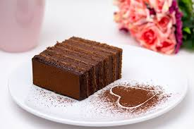

Policajka

Čokoladni kolač “Policajka” predstavlja zanimljiv i upečatljiv desert koji osvaja već na prvi pogled, a još više na prvi zalogaj. Iako sam naziv budi znatiželju, ovaj kolač je zapravo savršena kombinacija bogatog čokoladnog biskvita i kremaste, glatke kreme koja se topi u ustima.
Osnova kolača je sočan čokoladni biskvit, pripremljen od kvalitetnog kakaa ili tamne čokolade, koji daje dubok i intenzivan okus. Njegova struktura je mekana i lagana, ali dovoljno čvrsta da zadrži slojeve kreme koji dolaze iznad ili između biskvita. Upravo ta ravnoteža između biskvita i kreme čini “Policajku” posebno privlačnom.
Završni sloj često čini čokoladna glazura ili lagani posip od kakaa, koji dodatno naglašava eleganciju i jednostavnost ovog deserta. Servira se rashlađen, izrezan na pravilne kocke ili šnite, što mu daje uredan i “disciplinovan” izgled.
“Policajka” nije samo običan čokoladni kolač – to je desert koji spaja bogat okus, lijepu prezentaciju i dozu originalnosti u samom nazivu. Idealan je za porodična okupljanja, proslave ili trenutke kada želite nešto slatko, ali i vizualno zanimljivo.